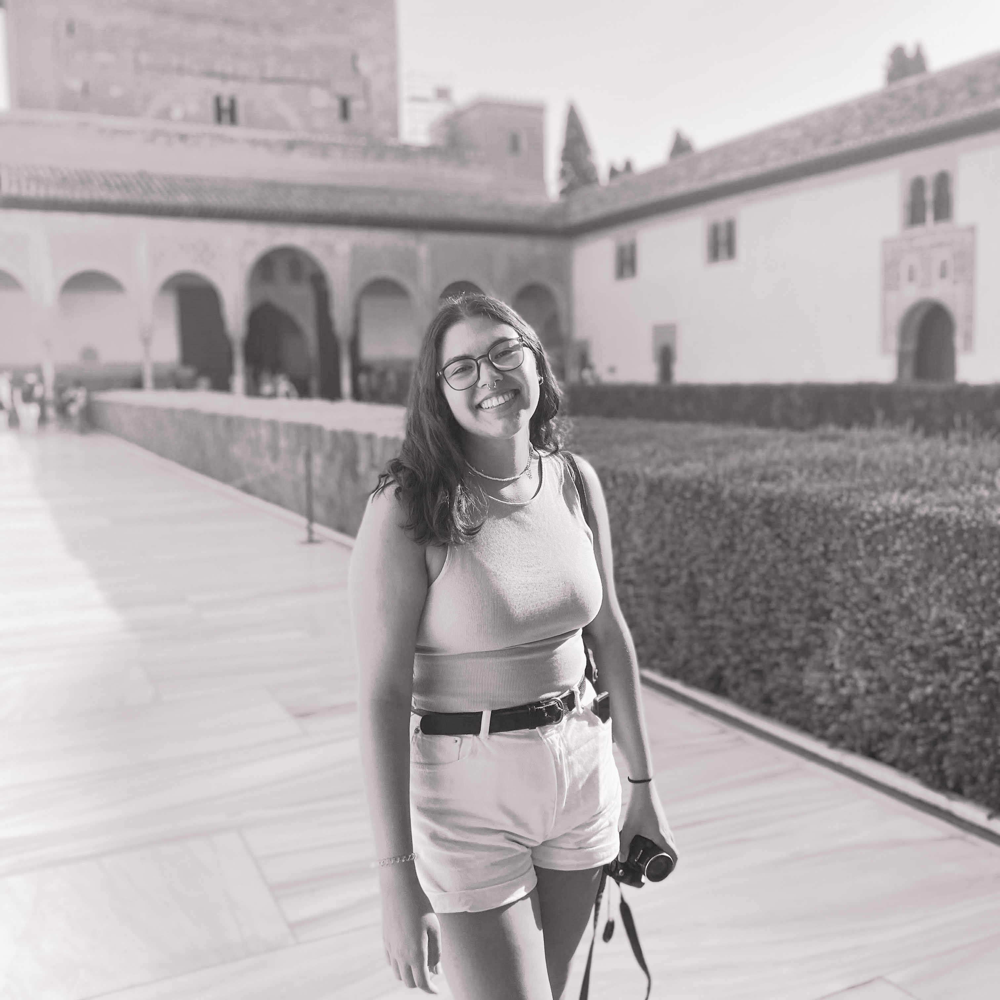

Placeholder
Me llamo Gabriela Paz Marín Araya, tengo 22 años, estudio Diseño, estoy en cuarto año en la Escuela de Arquitectura y Diseño de la Pontificia Universidad Catolica de Valparaiso, Chile. Estoy enfocada en el area de diseño industrial/producto.
Me gusta hacer cosas con las manos, la fotografía, viajar, la naturaleza. Creo ser una persona responsable y atenta, preocuda por el detalle.
Para más contenido de mis trabajos de Diseño puedes revisar mi wiki aquí
Para contactarse conmigo, por favor escribirme a gabriela.marin.a01@mail.pucv.cl